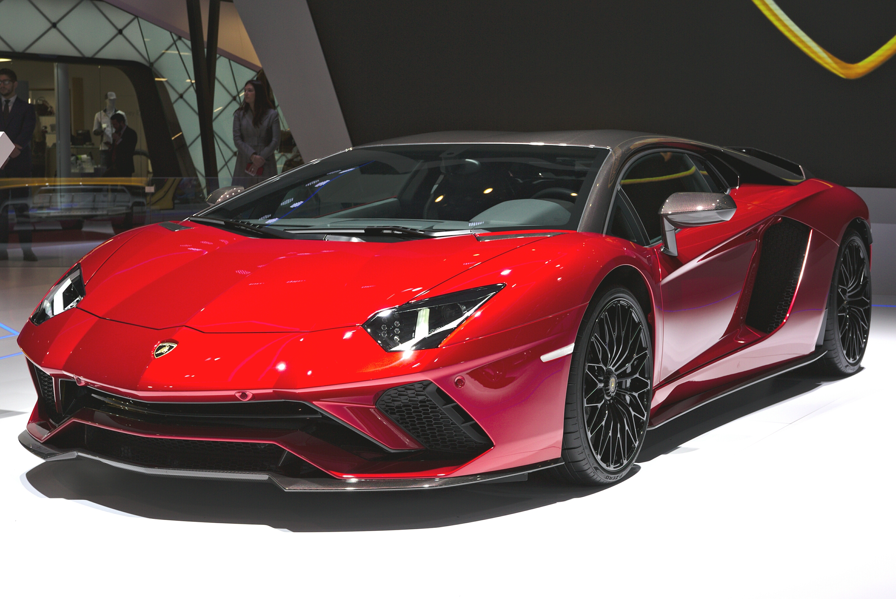

Resumo
A lamborghini Aventador foi produzida pelo fabricante italiano Lamborghini entre 2011 e 2022. O modelo foi desenvolvido para substituir a lamborghini murielago.
O aventador ficou conhecido por seu design agressivo, alto desempenho e pelo tradicional motor v12 da Lamborghini.
Durante a sua produção, o modelo recebeu diversas versões, incluindo versões de alto desempenho e edições especiais.
